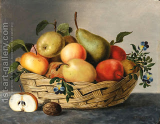

Eruvin 77 - Wall
If there is a wall between two courtyards, and this wall is at least ten hand-breadths high and four hand-breadths thick and, unlike the previous case , there is no window in that wall, then the residents of each of the two courtyards are considered separate from each other, and each courtyards should make an individual eruv (common food), so that they can each carry within their own courtyard.
If there are fruit on top of the wall, then the residents of each courtyard may go up on the wall and eat the fruit while being there. The wall is a separate private area; there is nothing wrong in going there, as well as nothing wrong in eating there. However, none of the courtyard's residents can bring the fruit down into his courtyard, because the wall is not part of any eruv, and he would be transferring from one private domain to another private domain - and that is exactly what the Sages prohibited, in order that the people living in courtyards have some reminder that carrying on Shabbat from a public area (street) to a private area (courtyard) is prohibited by the Torah.
Art: A basket of fruit by Jan Hendrik Aikes